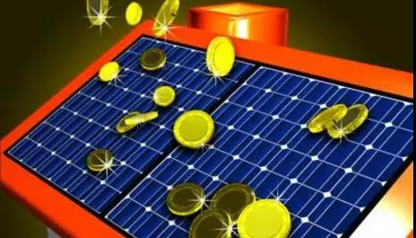

农村成家庭光伏的“主战场”每度电补贴0.67元 投资5万6年回本
- 强有力的补贴政策、绿色能源的发展需要、可观的投资收益、企业的大批涌入……从今年开始，户用光伏在全国形成燎原之势。去年起，浙江省便大力推进百万屋顶光伏计划。记者从宁波市能源局了解到，《宁波市家庭屋顶光伏工程实施方案》即将印发，方案中提出，到2020年，全市将建成家庭屋顶光伏装置9万户。同时方案在国家与省级补贴基础上，又出台了市级补贴标准。那么，如今宁波户用光伏的市场如何?有哪些模式值得学习与推广呢?
- 每度电累计补贴达0.67元 5万元6年即可回本
- “去年、前年大家还在讨论什么是能源互联网，为什么要做能源互联网，能源互联网可能会长什么样子。但是今年我们倾向于称之为落地之年，也就是怎么去做。”8月28日，清华大学能源互联网创新研究院能量管理与调控研究中心主任孙宏斌在国家能源互联网产业及技术创新联盟全体成员大会暨2017国家能源互联网大会上表示。
- 能源互联网的概念逐步从模糊走向清晰，源于政策的顶层设计定调。2016年2月，国家发改委、国家能源局和工信部联合发布了《关于推进互联网+智慧能源的指导意见》，勾画出能源互联网未来发展的基本雏形。
- 今年1月，国家能源局公布首批多能互补集成优化示范工程共23个项目；3月，国家能源局首批“互联网+智慧能源”（能源互联网）示范项目评选结果完成公示，示范项目共计56个，至今已陆续开工，从“愿景”步入“现实”。孙宏斌表示，“示范项目的落地非常深入，不是停留在表面上的，国家能源局，包括科技部有很多的项目在支持，资金的投入的体量也很大。
- 《能源》杂志记者在2017国家能源互联网大会上了解到，为促进能源互联网的健康有序发展，计划分为两阶段推进，2016年到2018年先期开展试点示范，后续推广应用。国家能源局在能源互联网的示范项目申报的近300多个项目中，确定了首批两大类9小类55个示范项目，原则上应于2017年8月底前开工，并于2018年底前建成。项目涵盖城市、园区、跨区等综合示范，电动汽车、能源大数据等，单位也有多元化的特征，符合能源互联网的阶段性目标。
- 乘着政策东风，各行各业纷纷对“互联网＋”鼓与呼，作为我国实现能源革命的重要抓手，能源行业马不停蹄地与互联网进行结合。国家能源专家咨询委员会副主任、中国工程院原副院长杜祥琬院士将能源互联网的含义描述为新能源技术和新的用能方式与产业模式的一个结合，是能源革命的落实和体现，也是能源互联网的意义。
- 杜祥琬院士认为，发展能源互联网是能源转型的特征之一，使传统的能源产业升级成为具有双重属性的产业，即既是能源产业又是能源服务业。“这个能源服务业是以用户为中心的，以提高能效和服务水平为宗旨的服务业，使大众得到更方便、更高效、更节约的能源服务”。
- 作为朝阳业态，能源互联网成为推动我国能源革命的重要战略支撑的同时，也催生出新业态和合作模式，互联网巨头阿里、腾讯涉足能源互联网、中广核与中国联通强强联手、远景能源搭伙微软、埃森哲，激发出更多的想象力，因此成为多方的关注焦点。
- 数据显示，能源互联网试点示范工作将于今年带动超过400亿元的投资，2020年市场规模将超过万亿元，拉动储能、智能电网等相关设备的发展。政策的冲锋号一吹响，群雄逐鹿，风电、光伏、储能、新能源汽车以及互联网巨头等纷纷触网，一些A股上市公司也开始动作，社会资本作为投资方甚至争取作为控股方积极参与能源互联网项目，搭上这趟飞速发展的列车。

- 发展 在“一带一路”讲述中国故事
- 千里之外的印尼中爪哇省南岸海滨，金色晚霞抹红湛澈长空，芝拉扎二期电站华灯初上。中国能建完成了一、二期电站建设，又承接了三期百万千瓦机组工程。
- 然而，二期投产后，中国能建一改过去的方式，人留下继续服务电站运维，“至今已累计发电超过40亿千瓦时，被评为印尼最佳私营电厂。”年轻的“运行+维护”项目经理汪滨说。这是中国能建为“一带一路”带去的新景象。

- 中国能建为“一带一路”带去了什么呢?
- 提供了中国标准———当地时间7月31日，白俄罗斯330千伏波斯塔维变电站正式投运，为白俄罗斯历史上最大的电网建设项目整体竣工打下坚实基础，电网项目总包方中国能建把中国标准带进了欧洲市场。
- 中国能建牵头完成了“一带一路”能源合作规划研究、“十三五”能源领域国际产能合作规划研究、中国与周边国家电力互联互通规划研究以及10多个国家能源合作规划研究，为推进能源合作提供了决策依据。以承揽的国际项目为载体，推动我国电力标准在项目中的应用，大量国际项目全部或部分采用中国标准，得到了项目业主、咨询工程师的认可，为促进标准“走出去”打下了基础。
- 推广了中国方案———当地时间6月29日，中国能建与英国ReliableEnergySolution公司签订了斯尔桑德垃圾电站与梅顿霍尔垃圾电站项目EPC合同，中国电力解决方案落地欧美市场。
- 针对不同国家的特点和业主需求，中国能建加强金融合作，设计不同的商业模式，推广和应用“中国方案”，借鉴共享，共同发展。巴基斯坦SK水电站项目，撬动了19亿美元的项目投资。约旦油页岩项目，获得了16亿美元的世界上最大的油页岩发电EPC项目。与中非基金合作设立中国海外基础设施开发投资公司，为破解大型项目资金难题创造了条件。
- 奉献了中国建造———当地时间8月4日，中国能建承建的非洲最大水电站———安哥拉卡卡水电站举行开工仪式，项目建设将为当地提供近万个就业岗位，培训一批专业管理和技术人才。
- 此外，中国能建承建的一批具有技术引领性和行业标志性电力工程项目，创造了多个第一。包括阿根廷基塞水电站、越南海阳燃煤电厂项目等。通过这些大项目的实施，向世界展示了“中国建造”的品牌形象。